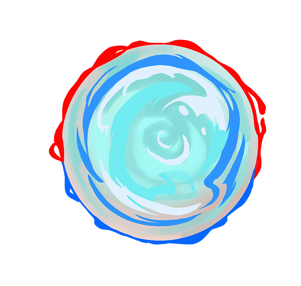
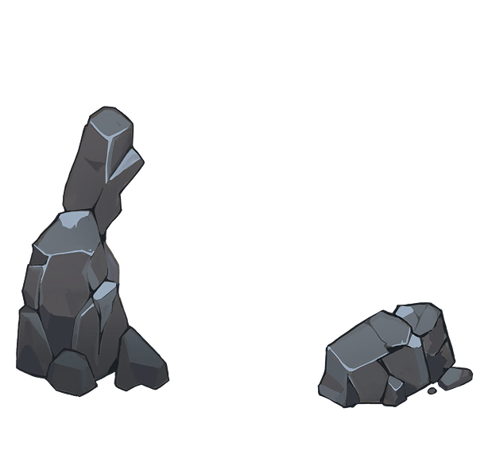

American DreamHover each red element to learn a little more!?

Hi! I'm Joanah Martin and this is my Capstone project for
DES 157B: Interative Media III.
This final project is the pinnacle of everything I've learned at UC Davis as both a Design and Cinema & Digital Media major.
As you explore this story, I invite you to consider how the American Dream has influenced our lives, revealing both its promises and contradictions, and to reflect on what it means for our future together.
Thank you for taking the time to experience this journey!


click to enter